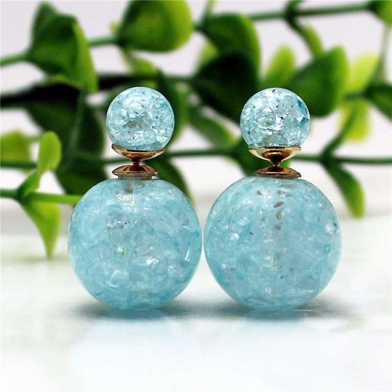
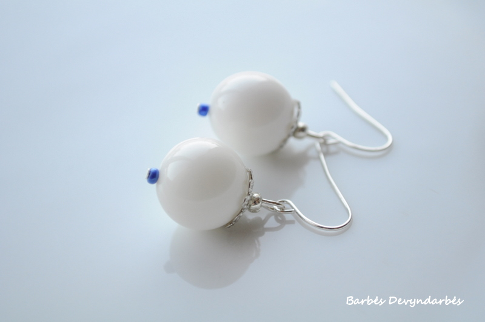

Elegantiški sidabriniai auskarai moterims - TomasGOLD
- Auskarai su pusbrangiais akmenimis | Sidabro auskarai
Elegantiški ir išskirtiniai Tomas Gold sidabriniai auskarai yra gaminami kruopščių juvelyrų rankomis ir tik iš aukščiausios kokybės medžiagų. Maži ar dideli sidabriniai auskarai visada derės prie jūsų aprangos ir tiks bet kuriai progai. Sidabriniai auskarai suteiks jūsų įvaizdžiui išskirtinę natą ir sukurs harmonijos jausmą. - Auskarai - Decomundo
Auskarai su briliantais – tai universali dovana, kurią populiaru pirkti bet kurio amžiaus merginai ar moteriai. Nesvarbu, ar tai dovana krikšto dukrai, dukrai, žmonai ar motinai – iškilminga proga įteikiami auskarai su deimantais yra didelė vertybė, kuri gali būti perleidžiama iš kartos į kartą ir ilgus metus džiuginti ne ... - Auksiniai auskarai | ziedelis.lt
Mažyčiai ar ilgi, žėrintys ar matiniai, iš sidabro ar aukso – rankų darbo dailieji auskarai užkariaus kiekvienos moters širdį. Šie itin subtiliai atrodantys papuošalai gimė tam, kad skleistų džiugesį – rankų darbo auskarai taps nuostabia dovana ir jaunai merginai, ir per gyvenimą užtikrintai žengiančiai moteriai, ir elegantiškajai mamai, ir solidžiai senelei. - Auskarai su deimantais, briliantais (auksiniai) | Aukso ...
Auskarai - bene populiariausia papuošalų rūšis. Jie būdingi visoms kultūroms ir kraštams. Šiais laikais ausis prasiduria ne tik merginos, bet ir vaikinai, o auskarų kolekcijoje dažniausiai galima rasti tai, kas atspindi nuotaiką ar tiesiog tinka prie rūbų. - Auskarai - Norų Namai
Aukštos kokybės auksiniai ir sidabriniai auskarai internetu užsakomi greitai ir patogiai, pristatomi patikimai ir greitai. Pasirinkimo gausa Jus nustebins! Rasite ir kuklių, santūrių auskarų ir puoštų cirkoniu, turkiu, opalu bei kitais akmenimis. - Trollbeads | Auskarai internetu - Trollbeads.lt
Auskarai su briliantais atrodo nepaprastai įspūdingai, jie tiks įvairioms progoms, prie skirtingų drabužių derinių. Segint auskarus su briliantais kitų papuošalų nė nereikia, nes briliantų spindesys bus esminis akcentas moters įvaizdyje, kurio nereikia papildyti niekuo kitu. Auksiniai auskarai su brangakmeniais žavi savo ... - Auksiniai auskarai, Balto aukso auskarai, raudono aukso ...
Auskarai internetu. Auskarai puošia žmogaus veidą nuo neatmenamų laikų. Dar prieš 7000 metų jie jau buvo populiarūs senovės Azijoje – tiesa, daugiau kaip vyrų papuošalas. Egiptiečiai ir asirai auskarais demonstruodavo savo priklausymą aukštesnei gyventojų klasei. - Auskarai - auksaspigiau.lt
Auksiniai auskarai, pakabukai, žiedai, grandinėlės, apyrankės, pakabukai. Gavome siutinuką, labai gražūs papuošaliukai. Ačiu Jums labai , butinai ... - Gintaro auskarai internetu | saniston.com
Auskarai – vienas populiariausių moteriškų papuošalų. Auskarai – mediniai, sidabriniai ar pagaminti iš metalo papuošalai žinomi ir nešiojami jau daugybę metų, tačiau vis dar nepraranda savo nuostabaus žavesio. Šie papuošalai suteikia žavesio ir pasitikėjimo savo grožiu. - Auskarai į bambą internetu - Puosnidama.lt
Auskarai iš balto,raudono, geltono aukso internetu. Visus juvelyrinius dirbinius galite apžiūrėti pardavimo vietose ar siunčiame paštu. Grąžinimo garantija 14 d

Dėmesio. Svetainė naudoja slapukus. Toliau naršydami Jūs sutinkate su jų naudojimu. Daugiau informacijos apie slapukus galite rasti čia . Ok Meniu
Žiedai
Auksiniai žiedai su brangakmeniais Auksiniai žiedai Sidabriniai žiedai Vestuviniai žiedai Sužadėtuvių žiedai
Auskarai
Auksiniai auskarai su brangakmeniais Auksiniai auskarai Sidabriniai auskarai Vaikiški auskarai
Pakabukai
Auksiniai pakabukai su brangakmeniais Auksiniai pakabukai Sidabriniai pakabukai Zodiako ženklai Sagės
Grandinėlės
Auksinės kolje su brangakmeniais Auksinės grandinėlės Sidabrinės grandinėlės Vyriškos auksinės grandinėlės
Apyrankės
Vyriškos auksinės apyrankės Auksinės apyrankės Sidabrinės apyrankės Apyrankės su brangakmeniais
Kita
Stalo įrankiai Dėžutės Priežiūros priemonės
Salonai
Ar žinai?
Prekių: 0.00€
Jūsų prekių krepšelis tuščias Meniu
Žiedai
Auksiniai žiedai su brangakmeniais Auksiniai žiedai Sidabriniai žiedai Vestuviniai žiedai Sužadėtuvių žiedai
Auskarai
Auksiniai auskarai su brangakmeniais Auksiniai auskarai Sidabriniai auskarai Vaikiški auskarai
Pakabukai
Auksiniai pakabukai su brangakmeniais Auksiniai pakabukai Sidabriniai pakabukai Zodiako ženklai Sagės
Grandinėlės
Auksinės kolje su brangakmeniais Auksinės grandinėlės Sidabrinės grandinėlės Vyriškos auksinės grandinėlės
Apyrankės
Vyriškos auksinės apyrankės Auksinės apyrankės Sidabrinės apyrankės Apyrankės su brangakmeniais
Kita
Stalo įrankiai Dėžutės Priežiūros priemonės
Salonai
Ar žinai?
Sidabriniai auskarai
Pradžia Sidabriniai auskaraiPrekių filtras
Kaina + € - € Akmuo + Aleksandritas 0 Ametistas 0 Be akmens 0 Berilas 0 Cirkonis 0 Citrinas 0 Citrininis kvarcas 0 Granatas 0 Korundas 0 Kult. Perlas 0 Kvarcas 0 Larimaras 0 Londono topazas 0 Mistinis Kvarcas 0 Opalas 0 Raudonasis Korundas 0 Rožinis opalas 0 Tanzanitas 0 Topazas 0 Zultanitas 0 Užsegimas + Angliškas užsegimas 0 Kabantys auskarai 0 Kitas 0 Rinkutės 0 Vinukai 0 Akmens spalva + Baltas 0 Juodas 0 Mėlynas 0 Oranžinis 0 Raudonas 0 Rožinis 0 Rudas 0 Violetinis 0 Žalias 0 Lydinio spalva + Baltas 0 Geltonas–Baltas 0 Rodžiuotas 0 Rūšis + Sidabras 0 Elegantiški ir išskirtiniai Tomas Gold sidabriniai auskarai yra gaminami kruopščių juvelyrų rankomis ir tik iš aukščiausios kokybės medžiagų. Maži ar dideli sidabriniai auskarai visada derės prie jūsų aprangos ir tiks bet kuriai progai. Sidabriniai auskarai suteiks jūsų įvaizdžiui išskirtinę natą ir sukurs harmonijos jausmą. Papildykite savo kolekciją sidabriniais auskarais.
22.50€ -10% Sidabriniai auskarai 103.00€
92.70€ -10% Sidabriniai auskarai 26.00€
23.40€ -10% Sidabriniai auskarai 74.00€
66.60€ -10% Sidabriniai auskarai 37.00€
33.30€ -10% Sidabriniai auskarai 34.00€
30.60€ -10% Sidabriniai auskarai 21.00€
18.90€ -10% Sidabriniai auskarai 54.00€
48.60€ -10% Sidabriniai auskarai 33.00€
29.70€ -10% Sidabriniai auskarai 50.00€
45.00€ -10% Sidabriniai auskarai 19.00€
17.10€ -10% Sidabriniai auskarai 39.00€
35.10€ -15% Sidabriniai auskarai 7.00€
5.95€ -10% Sidabriniai auskarai 93.00€
83.70€ -10% Sidabriniai auskarai 30.00€
27.00€ 1 2 3 4 5 6 7 8 9 | Rodoma nuo 1 iki 15 iš 787 (53 puslapių)
Klientams
Apmokėjimas Grąžinimas Pristatymas GarantijaTomasGold.lt
Dovanų kuponai Susisiekite su mumis Privatumo politika Juvelyrinių dirbinių priežiūraMano paskyra
Mano paskyra Užsakymų istorija Naujienų prenumerata Naudojimo sąlygos



Mauris vulputate dolor
Rutrum fermentum nibh in augue praesent urna congue rutrum.
Etiam posuere